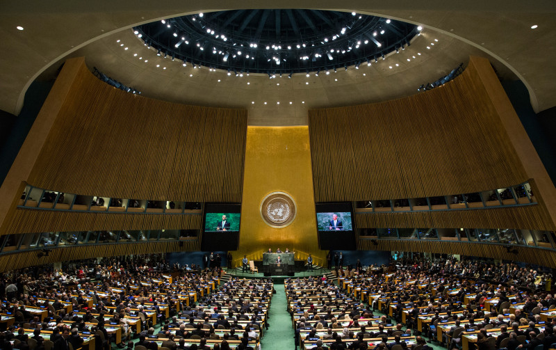

Inter-Government Collaboration
A number of international organizations exist to further the common-good cause of internet freedom and globalization of legislation.
The Freedom Online Coalition was founded in 2011 and exists to protect human rights online. The organization hopes to extend the world’s understanding of the UN’s Universal Declaration of Human Rights to defending our most basic rights both online and offline.
The World Trade Organization exists to facilitate free trade between nations. It has had limited success in liberalizing online policies in non-western nations, but played a large part in opening China’s economy.
The World Intellectual Property Organization exists to promote innovation and creativity for the good of nations through an international system of intellectual property. This organization has evolved with the internet and protects copyrights and intellectual property internationally.
The International Telecommunication Union is a division of the United Nations responsible for international regulation of information and communication technologies. The World Conference on International Telecommunications held in 2012 marks its most recent efforts to update the policies it has held in place since the 1980s in order to account for the internet, but only 89 of 152 member countries signed the proposed legislation (The US declined to sign citing concerns about the bill giving governments the right to restrict internet access).
In a more corporate role, the Internet Corporation for Assigned Names and Numbers is a nonprofit that coordinates the domain name system of the internet, ensuring its stability. Its governmental advisory committee has representatives from over 100 nations, and represents perhaps one of the best examples of international cooperation toward a common goal (the goal here being keeping the internet functioning).
The internet as a whole is often said to be fragmented by the nature of multiple nations having separate censorship policies, but it’s often overlooked that the current approach of international efforts to bring the world together through the internet is nearly as fragmented. Many more organizations than those listed above exist to undertake the unification of one section or another of the internet.
This is, of course, incredibly inefficient. The aforementioned 2012 World Conference on International Telecommunications held by the International Telecommunication Union is a good example of a failure of one organization bringing countries together but failing to make real progress - there are simply no consequences, no truly binding rules that can keep countries at the table to globalize internet policies. Many countries have diametrically opposed views on the powers of the government, and the internet is not something any single government or power controls. Existing international internet regulations exist by way of international treaties, and there is currently no sense of urgency that would motivate countries to compromise.